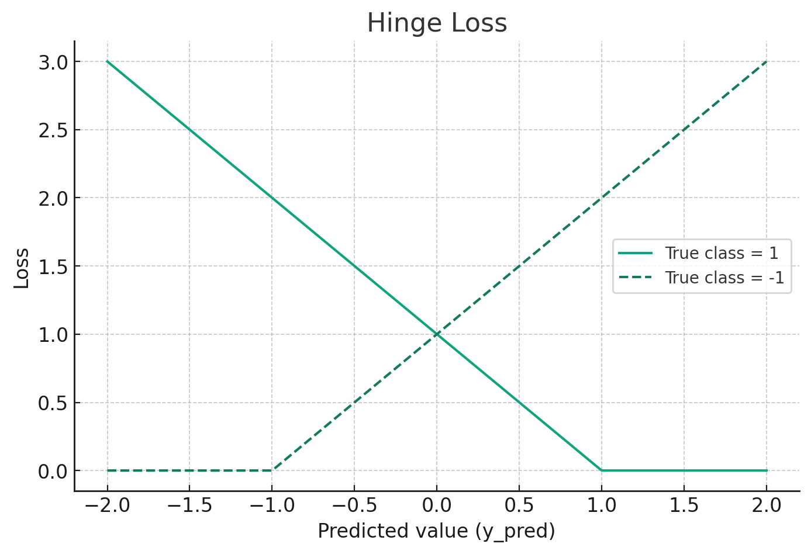

<!DOCTYPE html>
<html lang="en">
  <head>
    <meta charset="utf-8" />
    <meta name="viewport" content="width=device-width, initial-scale=1.0, maximum-scale=1.0, user-scalable=no" />

    <title></title>
    <link rel="stylesheet" href="dist/reveal.css" />
    <link rel="stylesheet" href="dist/theme/white.css" id="theme" />
    <link rel="stylesheet" href="plugin/highlight/zenburn.css" />
	<link rel="stylesheet" href="css/layout.css" />
	<link rel="stylesheet" href="plugin/customcontrols/style.css">


    <link rel="stylesheet" href="css/style.css" />

    <script defer src="dist/fontawesome/all.min.js"></script>

	<script type="text/javascript">
		var forgetPop = true;
		function onPopState(event) {
			if(forgetPop){
				forgetPop = false;
			} else {
				parent.postMessage(event.target.location.href, "app://obsidian.md");
			}
        }
		window.onpopstate = onPopState;
		window.onmessage = event => {
			if(event.data == "reload"){
				window.document.location.reload();
			}
			forgetPop = true;
		}

		function fitElements(){
			const itemsToFit = document.getElementsByClassName('fitText');
			for (const item in itemsToFit) {
				if (Object.hasOwnProperty.call(itemsToFit, item)) {
					var element = itemsToFit[item];
					fitElement(element,1, 1000);
					element.classList.remove('fitText');
				}
			}
		}

		function fitElement(element, start, end){

			let size = (end + start) / 2;
			element.style.fontSize = `${size}px`;

			if(Math.abs(start - end) < 1){
				while(element.scrollHeight > element.offsetHeight){
					size--;
					element.style.fontSize = `${size}px`;
				}
				return;
			}

			if(element.scrollHeight > element.offsetHeight){
				fitElement(element, start, size);
			} else {
				fitElement(element, size, end);
			}		
		}


		document.onreadystatechange = () => {
			fitElements();
			if (document.readyState === 'complete') {
				if (window.location.href.indexOf("?export") != -1){
					parent.postMessage(event.target.location.href, "app://obsidian.md");
				}
				if (window.location.href.indexOf("print-pdf") != -1){
					let stateCheck = setInterval(() => {
						clearInterval(stateCheck);
						window.print();
					}, 250);
				}
			}
	};


        </script>
  </head>
  <body>
    <div class="reveal">
      <div class="slides"><section  data-markdown><script type="text/template"><!-- .slide: class="drop" -->
<div class="" style="position: absolute; left: 0px; top: 0px; height: 848.66px; width: 1200px; min-height: 848.66px; display: flex; flex-direction: column; align-items: center; justify-content: center" absolute="true">

<div class="has-dark-background" style="background-color: #555555; position: absolute; left: 0%; top: 5%; height: 3%; width: 100%; display: flex; flex-direction: column; align-items: center; justify-content: center" >

혼자 공부하는 머신러닝
<!-- .element: style="font-size: 13px; color: white; padding: 10px; box-sizing: border-box" -->
</div>

<div class="" style="position: absolute; left: 0%; top: 20%; height: 50%; width: 100%; display: flex; flex-direction: column; align-items: center; justify-content: center" >

# 확률적 경사하강법
</div>
<div class="" style="position: absolute; left: 45%; top: 70%; height: 5%; width: 20%; display: flex; flex-direction: column; align-items: center; justify-content: center" >


2024.04.25. (목)

</div>
</div></script></section><section  data-markdown><script type="text/template"><!-- .slide: class="drop" -->
<div class="" style="position: absolute; left: 0px; top: 0px; height: 848.66px; width: 1200px; min-height: 848.66px; display: flex; flex-direction: column; align-items: center; justify-content: center" absolute="true">

## 점진적 학습 <!-- .element: style="align-self: center" -->

훈련한 기존 모델에 새로운 데이터를 추가하여 모델을 업데이트 하는 방법<br>대표적인 알고리즘 : 경사 하강법 <!-- .element: style="align-self: center" -->


</div></script></section><section  data-markdown><script type="text/template"><!-- .slide: class="drop" -->
<div class="" style="position: absolute; left: 0px; top: 0px; height: 848.66px; width: 1200px; min-height: 848.66px; display: flex; flex-direction: column; align-items: center; justify-content: center" absolute="true">

<div class="" style="position: absolute; left: 0%; top: 0%; height: undefined%; width: 50%; display: flex; flex-direction: column; align-items: center; justify-content: center" >

#### 경사하강법을 이용한 학습 예시
```
input = np.array([2, 4, 6, 8, 10, 12, 14])
output = np.array([3, 5, 7, 9, 11, 13, 15])
```

`$MSE = \frac{1}{n}\sum \{y_i​−(ax_i​+b)\} ^2$`
`$\phantom{MSE} =  \frac{1}{7}[(3−(a×2+b))^2+(5−(a×4+b))^2+\cdots +$`
`$\phantom{MSEME} + (13−(a×12+b))^2+(15−(a×14+b))^2]$`
`$\phantom{MSE} = 80a^2+16ab−176a+b^2−18b+97$`
<!-- .element: style="font-size: 20px; display: flex; flex-direction: column; align-items: flex-start; justify-content: space-evenly" align="left" -->


</div>

<div class="" style="position: absolute; left: 55%; top: undefined%; height: 100%; width: 50%; display: flex; flex-direction: column; align-items: center; justify-content: center" drag ="50 10">

`$MSE_a  = -\frac{2}{n}\sum(y_i-(ax_i+b))x_i$`
`$MSE_b = -\frac{2}{n}\sum(y_i-(ax_i+b))$`
```
a, b = 2, 2 # 초기값(출발장소 : 적당히 아무거나)
lr = 0.005 #learning rate (다리길이)
result = [a*i + b for i in input]
error = output - result # (y_i -(ax_i+b))
error = [ -3 -5 -7 -9 -11 -13 -15]
input*error =  [ -6 -20 -42 -72 -110 -156 -210] 
```
`$ a = a - lr*MSE_a$` <br>
`$b  = b - lr*MSE_b$`
<br>
`$a, b$` 값의 변화 : <br>
`$(2, 2) \rightarrow(1.56,1.955) \rightarrow (1.30, 1.93)\cdots \rightarrow (0.99,1.123)$`


</div>
</div></script></section><section  data-markdown><script type="text/template"><!-- .slide: class="drop" -->
<div class="" style="position: absolute; left: 0px; top: 0px; height: 848.66px; width: 1200px; min-height: 848.66px; display: flex; flex-direction: column; align-items: center; justify-content: center" absolute="true">

## 손실 함수 (Loss) : 내려가야할 산
회귀함수와 원래 값의 차이를 계산하는 함수 <br> 연속이고 미분가능해야함<br>예 : MSE (Mean Squared Error), 크로스 엔트로피(Cross-Entropy), 힌지(hinge) 

<split even gap="5">


</split>


source : https://towardsdatascience.com/animations-of-logistic-regression-with-python-31f8c9cb420<!-- .element: class="src" -->
</div></script></section><section  data-markdown><script type="text/template"><!-- .slide: class="drop" -->
<div class="" style="position: absolute; left: 0px; top: 0px; height: 848.66px; width: 1200px; min-height: 848.66px; display: flex; flex-direction: column; align-items: center; justify-content: center" absolute="true">

<div class="" style="position: absolute; left: 0%; top: 5%; height: 20%; width: 100%; display: flex; flex-direction: column; align-items: center; justify-content: center" >

## 이진 크로스 엔트로피 (Binary Cross Entropy)
</div>

<div class="" style="position: absolute; left: 0%; top: 20%; height: undefined%; width: 46%; display: flex; flex-direction: column; align-items: center; justify-content: center" >

`$ \begin{cases} -\log{p} & \text{if }y = 1 \\ -\log(1-p) & \text{if }y = 0 \end{cases} $`<br><br>
`$= -\{y\log{p} + (1-y) \log(1-p) \} $`

`$ CE  = -\frac{1}{n}\sum\{y\log{p} + (1-y) \log(1-p) \} $`


</div>

<div class="" style="position: absolute; left: 50%; top: 20%; height: undefined%; width: 46%; display: flex; flex-direction: column; align-items: center; justify-content: center" >

**[Remind]** Linear Regression - MSE
<br>`$MSE_a = (-1)\times \rm{mean}(error \times input)$`
<br>`$MSE_b = (-1)\times \rm{mean}(error) $`

**[Discover]** Sigmoid - CE
<br>`$CE_a = (-1)\times \rm{mean}(error \times input)$`
<br>`$CE_b = (-1)\times \rm{mean}(error) $`

(증명) https://velog.io/@epsilon/시그모이드-오차함수의-편미분
</div>
</div></script></section><section  data-markdown><script type="text/template"><!-- .slide: class="drop" -->
<div class="" style="position: absolute; left: 0px; top: 0px; height: 848.66px; width: 1200px; min-height: 848.66px; display: flex; flex-direction: column; align-items: center; justify-content: center" absolute="true">

## 확률적 경사하강법
하나의 샘플을 랜덤하게 골라 경사도를 계산하고 단계적으로 하강하는 것
* 종류 : 확률적 경사 하강법, 미니배치 경사 하강법, 배치 경사 하강법
* 에포크 : 훈련세트를 한번 모두 사용하는 과정


</div></script></section><section  data-markdown><script type="text/template"><!-- .slide: class="drop" -->
<div class="" style="position: absolute; left: 0px; top: 0px; height: 848.66px; width: 1200px; min-height: 848.66px; display: flex; flex-direction: column; align-items: center; justify-content: center" absolute="true">

<div class="" style="position: absolute; left: 0%; top: 20%; height: 20%; width: 100%; display: flex; flex-direction: column; align-items: center; justify-content: center" >

## SDGClassfier
</div>

<div class="" style="position: absolute; left: 0%; top: 35%; height: undefined%; width: 46%; display: flex; flex-direction: column; align-items: center; justify-content: center" >

```
  from sklearn.linear_model import SGDClassifier

sc = SGDClassifier(loss='log_loss', max_iter=10)
sc.fit(train_scaled, train_target)

print(sc.score(train_scaled, train_target))
print(sc.score(test_scaled, test_target))
```


</div>

<div class="" style="position: absolute; left: 50%; top: 30%; height: undefined%; width: 46%; display: flex; flex-direction: column; align-items: center; justify-content: center" >

### partial_fit <!-- .element: style="margin-bottom: -2px" -->
: 기존 훈련된 모델에 1에포크씩 추가로 더 훈련
<!-- .element: style="margin-bottom: -2px" -->
```
sc.partial_fit(train_scaled, train_target)

print(sc.score(train_scaled, train_target))
print(sc.score(test_scaled, test_target))
```
</div>
<div class="block">

https://bit.ly/hgml402
</div>

<!-- .element: style="margin-top: 300px" -->
</div></script></section><section  data-markdown><script type="text/template"><!-- .slide: class="drop" -->
<div class="" style="position: absolute; left: 0px; top: 0px; height: 848.66px; width: 1200px; min-height: 848.66px; display: flex; flex-direction: column; align-items: center; justify-content: center" absolute="true">

## 에포크와 과대적합<!-- .element: style="align-self: center" -->


</div></script></section><section  data-markdown><script type="text/template"><!-- .slide: class="drop" -->
<div class="" style="position: absolute; left: 0px; top: 0px; height: 848.66px; width: 1200px; min-height: 848.66px; display: flex; flex-direction: column; align-items: center; justify-content: center" absolute="true">

<div class="" style="position: absolute; left: 0%; top: 25%; height: 60%; width: 46%; display: flex; flex-direction: column; align-items: center; justify-content: center" >


```
import numpy as np  
sc= SGDClassifier(lass='log', random_state=42)

train_score= []  
test_score = 0  
classes= np.unique(train_target)

for in range(0, 300):  
sc.partial_fit(train_scaled, train_target, classes=classes) 
train_score.append(sc.score(train_scaled, train_target)) 
test_score.append(sc.score(test_scaled, test_target))

import matplotlib.pyplot as plt

plt.plot(train_score) 
plt.plot(test_score) 
plt.xlabel('epoch') 
plt.ylabel('accuracy') 
plt.show()
```
</div>

<div class="" style="position: absolute; left: 50%; top: 25%; height: 60%; width: 46%; display: flex; flex-direction: column; align-items: center; justify-content: center" >


</div>
</div></script></section><section  data-markdown><script type="text/template"><!-- .slide: class="drop" -->
<div class="" style="position: absolute; left: 0px; top: 0px; height: 848.66px; width: 1200px; min-height: 848.66px; display: flex; flex-direction: column; align-items: center; justify-content: center" absolute="true">

## hinge 와 SVM(Support Vector Machine) <!-- .element: style="align-self: center" -->

<split even gap="3">





</split>
</div></script></section><section  data-markdown><script type="text/template"><!-- .slide: class="drop" -->
<div class="" style="position: absolute; left: 0px; top: 0px; height: 848.66px; width: 1200px; min-height: 848.66px; display: flex; flex-direction: column; align-items: center; justify-content: center" absolute="true">

## loss 함수의 다른 옵션들
1. **`hinge`** - 표준 SVM 마진 손실. 데이터 포인트가 올바르게 분류되고 마진보다 멀리 떨어져 있으면 0의 손실을 가집니다.
2. **`log`** - 로지스틱 회귀에 사용되는 로그 손실(로그 리그레션). 확률적으로 결과를 예측하는데 사용됩니다.
3. **`modified_huber`** - 로버스트한 휴버 손실의 변형으로, 이상치에 덜 민감하고 0과 1 사이의 확률 예측을 제공합니다.
4. **`squared_hinge`** - `hinge` 손실의 제곱 버전으로, 잘못 분류된 예시에 대해 보다 강한 패널티를 부과합니다.
5. **`perceptron`** - 퍼셉트론 알고리즘에 기반한 손실 함수. 올바르게 분류된 예시에 대해서는 손실이 없고, 잘못 분류된 예시에 대해서는 고정된 패널티를 부과합니다.
6. **`squared_loss`** - 최소 제곱 오차 손실. 회귀 문제에 주로 사용됩니다.
7. **`huber`** - 휴버 손실은 회귀 문제에 주로 사용되며, 예측 오차가 작을 때는 제곱 오차 손실을, 큰 오차에 대해서는 선형 손실을 적용합니다.
8. **`epsilon_insensitive`** - 선형 서포트 벡터 회귀에 사용되는 손실 함수입니다. 예측값과 실제값의 차이가 특정 마진(epsilon) 내에 있으면 손실이 0입니다.
9. **`squared_epsilon_insensitive`** - `epsilon_insensitive`의 제곱 버전으로, 보다 강한 패널티를 부과합니다.
</div></script></section></div>
    </div>

    <script src="dist/reveal.js"></script>

    <script src="plugin/markdown/markdown.js"></script>
    <script src="plugin/highlight/highlight.js"></script>
    <script src="plugin/zoom/zoom.js"></script>
    <script src="plugin/notes/notes.js"></script>
    <script src="plugin/math/math.js"></script>
	<script src="plugin/mermaid/mermaid.js"></script>
	<script src="plugin/chart/chart.min.js"></script>
	<script src="plugin/chart/plugin.js"></script>
	<script src="plugin/customcontrols/plugin.js"></script>

    <script>
      function extend() {
        var target = {};
        for (var i = 0; i < arguments.length; i++) {
          var source = arguments[i];
          for (var key in source) {
            if (source.hasOwnProperty(key)) {
              target[key] = source[key];
            }
          }
        }
        return target;
      }

	  function isLight(color) {
		let hex = color.replace('#', '');

		// convert #fff => #ffffff
		if(hex.length == 3){
			hex = `${hex[0]}${hex[0]}${hex[1]}${hex[1]}${hex[2]}${hex[2]}`;
		}

		const c_r = parseInt(hex.substr(0, 2), 16);
		const c_g = parseInt(hex.substr(2, 2), 16);
		const c_b = parseInt(hex.substr(4, 2), 16);
		const brightness = ((c_r * 299) + (c_g * 587) + (c_b * 114)) / 1000;
		return brightness > 155;
	}

	var bgColor = getComputedStyle(document.documentElement).getPropertyValue('--r-background-color').trim();
	var isLight = isLight(bgColor);

	if(isLight){
		document.body.classList.add('has-light-background');
	} else {
		document.body.classList.add('has-dark-background');
	}

      // default options to init reveal.js
      var defaultOptions = {
        controls: true,
        progress: true,
        history: true,
        center: true,
        transition: 'default', // none/fade/slide/convex/concave/zoom
        plugins: [
          RevealMarkdown,
          RevealHighlight,
          RevealZoom,
          RevealNotes,
          RevealMath.MathJax3,
		  RevealMermaid,
		  RevealChart,
		  RevealCustomControls,
        ],


    	allottedTime: 120 * 1000,

		mathjax3: {
			mathjax: 'plugin/math/mathjax/tex-mml-chtml.js',
		},
		markdown: {
		  gfm: true,
		  mangle: true,
		  pedantic: false,
		  smartLists: false,
		  smartypants: false,
		},

		mermaid: {
			theme: isLight ? 'default' : 'dark',
		},

		customcontrols: {
			controls: [
			]
		},
      };

      // options from URL query string
      var queryOptions = Reveal().getQueryHash() || {};

      var options = extend(defaultOptions, {"width":1200,"height":848.66,"margin":0.2,"controls":false,"progress":true,"slideNumber":true,"transition":"slide","transitionSpeed":"default"}, queryOptions);
    </script>

    <script>
      Reveal.initialize(options);
    </script>
  </body>

  <!-- created with Advanced Slides -->
</html>
